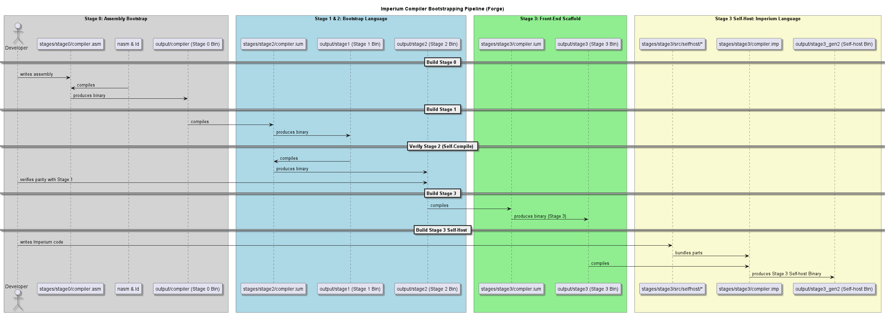

Forge is a minimal, self-contained bootstrap compiler written from scratch in x86-64 NASM assembly for Linux. It is designed to act as the Stage 0 foundation, compiling the core compiler for a high-level language called Imperium.
By writing Stage 0 in pure assembly, the project avoids any dependencies on external high-level compilers, establishing a clean, bottom-up bootstrapping pipeline. The compiler targets the native Linux ABI, handling register allocation, memory layout, and system calls directly to generate standalone executables.
Forge achieves self-hosting by compiling subsequent generations of its own compiler source code through multiple distinct language tiers:
The language compiled by Forge evolves across the stages, ultimately supporting a structured, type-safe programming model:
Writing a bootstrapping compiler requires high reliability, as a single bug in the code generation will corrupt subsequent builds. Forge features robust validation harnesses to prevent regressions:
Automated regression suites compile and run test files, comparing execution outputs against expected baselines. Self-host scaffold verification splits compile checks into smaller segments, helping pinpoint bugs in parser or lexer layers.
Performance benchmarking measures timings for warm builds, tracking compiler latency and writing detailed statistics to JSON outputs to verify code generation efficiency.
Building a compiler in assembly forces a deep understanding of low-level systems architecture:
Mapping variables and expressions to physical CPU registers and stack frames teaches optimal memory management. Supporting the System V ABI requires matching call frames, parameter registers, and alignment boundaries exactly to safely interface with standard libraries.
Developing the bootstrapping pipeline also shows the value of strong diagnostic logging and test validation when tracking down compiler bugs that span multiple generations of generated binaries.